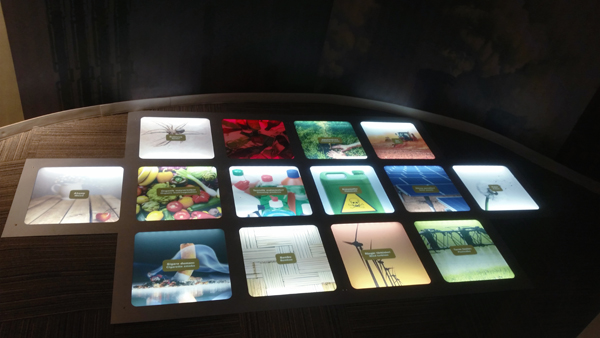

Konya Science Center - Memory Test
I sketched and developed an interactive prototype for one of the interactive exhibit used for the Konya Science Center in Turkey. In order for patrons to learn about diet and health, the interactive allows the user to play a game where people can match two cards of the same food image and increase their energy